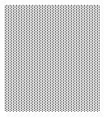
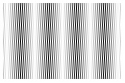
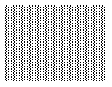
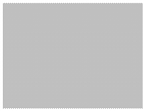

Customizing the Nautilus Interface
Nautilus has been designed to be highly configurable, both to suit the desire of users for customized decor, and, more importantly, to suit the needs of users at different levels of expertise.
Chapter two is presented in four sections:
-
Choosing and Customizing User Settings
-
Customizing File Layout and Icon Appearance
-
Configuring Applications
-
Customizing Nautilus Appearance
Choosing and Customizing User Settings
User settings are customizable settings that control performance and design variables, as well as certain appearance variables that are related more toward system function than simple decor.
There are three levels of user settings to choose from: basic, intermediate, and hacker--the level of information displayed increasing with each step. In addition, the two higher-level settings are both highly customizable.
Accessing and Choosing User Settings
To access user settings, click the Settings menu item on the menu bar (Figure 1).

Figure 3: User Settings Accessed from Drop-down Menu
The drop-down menu presents the three levels of choices, and the choice of customizing the intermediate and hacker levels.
Figure 2 and 3 present the most obvious of the differences between the default novice and hacker display settings. In both cases Nautilus is looking at the /root directory. This is a directory that typically has a number of hidden files. In Figure 2, at the novice setting, the hidden files are invisible. In Figure 3, at the hacker setting, they are visible, as is some additional file information: file size.
Figure 2: The Root Directory at the Novice User Setting
Figure 3: The Root Directory at the Hacker User Setting, Showing Hidden Files
Customizing User Settings
The customize (user) settings menu item, which is used to customize the intermediate and hacker user levels, presents the same choices for both. The choices are listed under six headings:
-
Directory Views
-
Sidebar Panels
-
Appearance
-
Speed Trade-offs
-
Search
-
Navigation
Figure 4 shows the choices in the first heading: Directory Views. Here the user can choose to have Nautilus open a file in a separate window, activate items with a single or a double click, and display hidden files.

Figure 4: Customizing Directory Views
The next heading down the list, Sidebar Panels, lets the user choose which panels should appear in the sidebar. `Appearance', the third heading, allows the user to choose between smoother--but slower--graphics, or rough edges and speed. It also allows a choice of fonts with which to display file names and other information.
The `Navigation' heading allows the user to change the default `home' location--where Nautilus automatically goes to when the `Home' button is clicked, on the tool bar. `Search' (Figure 5), lets users configure the file manager to search for files by text only, or also by their properties (slower), to optionally do slow, complete searches, and to change, if desired, Nautilus' default web search engine.
Figure 5: Customizing Search Features: Complexity, Speed and Engine
Customizing File Layout and Icon Appearance
The layout of files in the main window can be a major factor in the ease and speed of file identification. The default method of laying out files, alphabetically according to file names, is appropriate under certain conditions, i.e.: when the files in a directory are all of a similar type, with well designed names following a similar pattern. However, file identification can be tedious and difficult in a directory holding large numbers of files of disparate types, and without an obvious naming convention.
Choices in File Layout
Nautilus addresses this issue by giving the user several choices of file layout. Figure 6 shows the Layout drop-down menu, the range of layout choices available, and a directory with several different file types arranged alphabetically.
Figure 6: Layout Choices, and an Unoptimized Alphabetical Layout
In this example, a more sensible layout would be `Sort by Type'. The result of this choice of layout is shown in Figure 7.
Figure 7: A More Logical Layout, by Type
Once a method of layout is chosen, the presentation can be further optimized with the `Ascending' or `Descending' options.
Customizing Icon Captions
Icon captions and appearance can also be adjusted. A file caption must always start with the file name; however, both the type of information and the order of information displayed beneath file names can be manipulated.
The Icon Captions menu item is found at the bottom of the Settings drop-down menu. When clicked, it displays the Icon Captions sub-menu, Figure 8.

Figure 8: Three Menu-Buttons Determining the Order of Icon Information
The three menu-buttons on this sub-menu reflect the order of information displayed in the icon caption. Each button displays identical information, from file size to MIME type--ten types of information in all. The type chosen by the top button will appear first, beneath the file name, the type chosen by the second will appear next, etc. Figure 9 shows an enlarged file image (to 400%), with the captioned information reflecting the order in the accompanying Icon Caption sub-menu.
Figure 9: Size, Date Modified, Type
Differentiating a Directory with a Customized Icon
The actual appearance of an icon can be replaced by another--useful if, for instance, you want to identify a certain directory by the type of files it contains. The method used is to drag and drop the icon in the main window which you want for a replacement, to the icon in the sidebar that you want to replace. An example can be seen in Figure 10, where an icon representing a portrait of Beethoven has been used to identify the `music' directory.
Figure 10: Identifying a Folder with Another File's Icon
Adding Emblems
Icon appearance can also be enhanced by the use of emblems. Click on the file with the right mouse button, and choose `Show Properties'. In the resulting properties window, click the middle tab, `Emblems'. Any and all of the emblems may be added to a file's iconic appearance. In the example shown in Figure 11, the `Draft' emblem has been added to a text file.
Figure 11: Adding an Emblem to an Icon
Configuring Applications
As we have seen in Chapter One, a file can easily be opened by its application from within Nautilus, relieving the user of the tedious extra steps of first starting the application, then finding the desired file. Nautilus does this by assigning certain default applications to certain file types. This too is customizable by the user.
Clicking on a file with the right mouse button brings up a menu with the item, `Open With'. Moving the mouse pointer to this item opens a sub-menu (Figure 12).
Figure 12: The Open With Sub-Menu
In this example, Nautilus gives the user several choices. The graphic file can be opened with one of two default viewers, with Nautilus' own Image Viewer, or by another application. To customize this choice, click the menu item, `Other Application'.
The `Open with Other' window which appears (Figure 13), shows the user the current applications setup for opening the selected file type, and, by clicking the `Modify' button, gives a variety of choices for modifying each application's behavior. If the user wishes to select a different application program, clicking on the `Go There' button will open the GNOME Control Center, where any application available on the system can be selected.
Figure 13: Modifying a File's Default Application
Customizing Nautilus Appearance
Many users are not content to stare at a `default' desktop decor--they want to customize it according to taste. For this, a wide range of backgrounds, colors and decors is available, and, should the user wish, they can add their own.
To change the desktop decor, click on Edit on the menu bar, and choose `Customize'. The Nautilus property browser window appears.
The simplest way to change an overall `look', is to change the theme. Several themes are available; clicking on the theme button immediately changes the theme, allowing the user to preview their changes before closing the window. The property browser window and two different themes are shown in figures 14 and 15.

Figure 14: The `Arlo' Theme, with the Property Browser Window
Figure 15: The `Eazel' Theme, with the Property Browser Window
A full selection of Backgrounds and Colors, as well as Emblems, is also provided, for more customized decor.